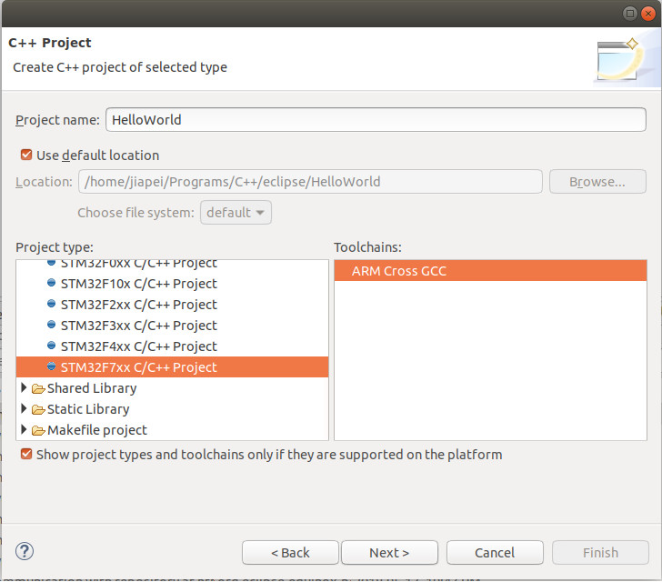
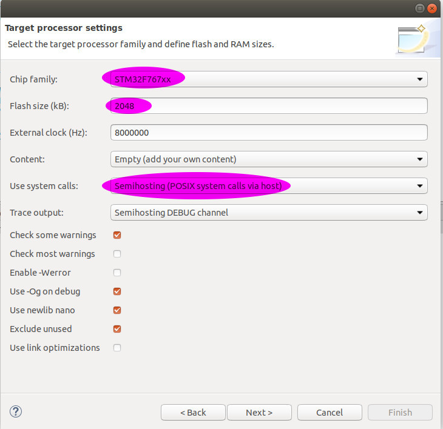
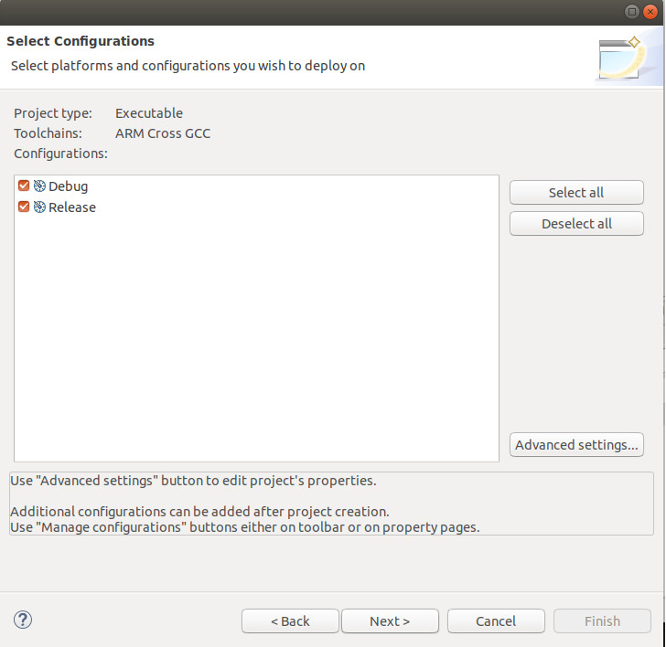
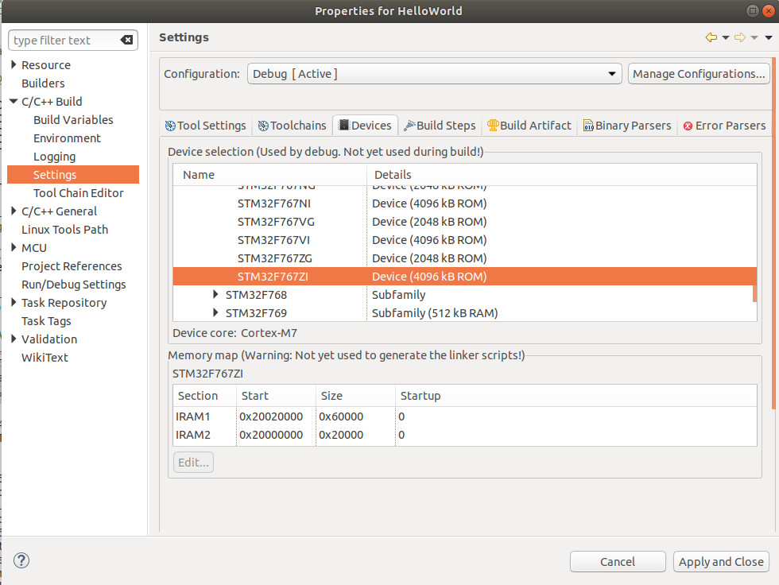
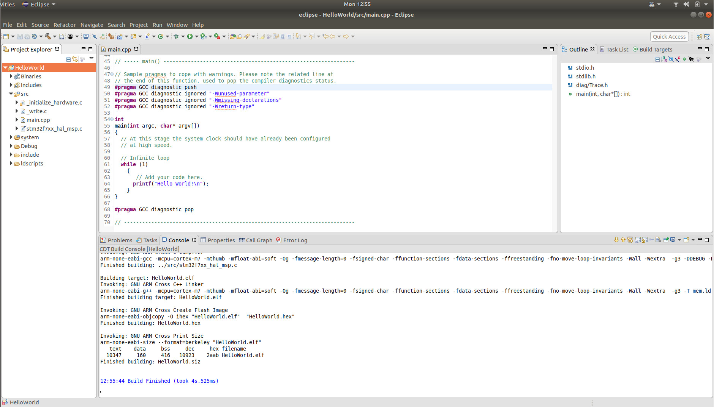

2.3 FIRST STM32 Project - "Hello World"
As any other programming languages, our first STM32 Project is also "Hello World", without hardware wiring. Using GNU MCU Eclipse to develop STM32 follows the same way to develop any other projects under Eclipse.
2.3.1 Steps to Build Our First Empty Project
A. Create an Empty Project
File->New->C/C++ Project, then click on C++ Managed Build:

Then, click Next.
B. Select STM32F7XX C/C++ Project
In the dialog C++ Project,
- under Project type:->Executable, select STM32F7XX C/C++ Project
- under Project name:, input Hello World

Then, click Next.
C. Target Processor Settings
In the dialog Target Processor Settings，
- under Chip family, select STM32F767xx
- under Flash size (kB):, make sure it's 2048
- under External clock (Hz):", make sure it's 8000000
- under Content:, select Empty (add your own content)
- under Use system calls:, select Freestanding (no POSIX system calls)

Then, click Next.
D. Folder settings

Just click Next.
E. Select Configurations

Just click Next.
F. GNU ARM Cross Toolchain
In the dialog GNU ARM Cross Toolchain,
- under Toolchain name:, select GNU MCU Eclipse ARM Embedded GCC (arm-none-eabi-gcc)
- under Toolchain path:, make sure you put the correct toolchain directory. In our case:
$ ls /opt/GCCToolChains/gnu-mcu-eclipse/arm-none-eabi-gcc/7/bin arm-none-eabi-addr2line arm-none-eabi-elfedit arm-none-eabi-gcc-ranlib arm-none-eabi-gprof arm-none-eabi-ranlib arm-none-eabi-ar arm-none-eabi-g++ arm-none-eabi-gcov arm-none-eabi-ld arm-none-eabi-readelf arm-none-eabi-as arm-none-eabi-gcc arm-none-eabi-gcov-dump arm-none-eabi-ld.bfd arm-none-eabi-size arm-none-eabi-c++ arm-none-eabi-gcc-7.2.1 arm-none-eabi-gcov-tool arm-none-eabi-nm arm-none-eabi-strings arm-none-eabi-c++filt arm-none-eabi-gcc-ar arm-none-eabi-gdb arm-none-eabi-objcopy arm-none-eabi-strip arm-none-eabi-cpp arm-none-eabi-gcc-nm arm-none-eabi-gdb-py arm-none-eabi-objdump

Finally, click Finish.
G. Build the Empty Project
Now, let's have a look at the empty project's code:
#include <stdio.h>
#include <stdlib.h>
#include "diag/Trace.h"
// ----------------------------------------------------------------------------
//
// Standalone STM32F7 empty sample (trace via DEBUG).
//
// Trace support is enabled by adding the TRACE macro definition.
// By default the trace messages are forwarded to the DEBUG output,
// but can be rerouted to any device or completely suppressed, by
// changing the definitions required in system/src/diag/trace_impl.c
// (currently OS_USE_TRACE_ITM, OS_USE_TRACE_SEMIHOSTING_DEBUG/_STDOUT).
//
// ----- main() ---------------------------------------------------------------
// Sample pragmas to cope with warnings. Please note the related line at
// the end of this function, used to pop the compiler diagnostics status.
#pragma GCC diagnostic push
#pragma GCC diagnostic ignored "-Wunused-parameter"
#pragma GCC diagnostic ignored "-Wmissing-declarations"
#pragma GCC diagnostic ignored "-Wreturn-type"
int
main(int argc, char* argv[])
{
// At this stage the system clock should have already been configured
// at high speed.
// Infinite loop
while (1)
{
// Add your code here.
}
}
#pragma GCC diagnostic pop
// ----------------------------------------------------------------------------
Then, we Build Project,

2.3.2 Steps to Build "Hello World"
A. Code Modification
In file main.cpp, add one line printf("Hello World!\n"); under Add your code here. as:
// Add your code here.
printf("Hello World!\n");
B. Build Project - Failure

Why? In the next step, we are going to solve the problem.
C. --specs=nosys.specs
To build the project successfully, we need to set --specs=nosys.specs. But, how to? HelloWorld->Properties->C/C++ Build->Settings->Tool Settings->GNU ARM Cross C++ Linker->Miscellaneous, and tick Do not use syscalls(-specs=nosys.specs).

Then, we Apply.
D. Devices STM32F767ZI
Then, we move to Devices tab, and we found STM32F767ZI.

Then, we Apply and Close.
E. Build Project Again - Successful
